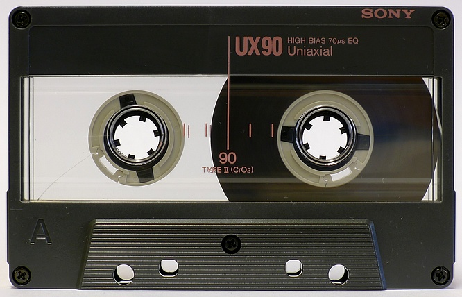

Going Cross-Channel
Today, the current dominant guiding design principle requires that a product's function should be made apparent through immediate interaction.
Whether seen, felt, read, heard, or otherwise perceived, good UX design is supposed to be its own user manual, allowing users to apprehend functionality and usability with minimal effort. This principle, however, is challenged by increasingly complex products.
Clearly, traditional print- or screen-oriented user guides and product manuals cannot be solely relied upon to communicate functionality to users. Therefore, the future of UX lies in creating cross-channel connectedness to reach the user sooner through channels they like.
Augmenting Reality
Recall that the internet itself was created in order to link documents, allowing readers to follow references to their source. That early emphasis on embedded interconnectedness has grown far beyond its original scope to incorporate many simultaneous channels to engage the user. This cross-channel connectedness is becoming essential.
Car owners are less inclined than ever to read bound paper manuals, yet car manufacturers are adding more distracting, complex technology to car interiors with every new model. Good UX must solve this by using cross-channels.
Hyundai has recently developed an augmented-reality, cross-channel version of its car manual, and it has incorporated augmented reality into its heads-up-display. Augmented- and cross-channel media will proliferate through the automotive industry.
This emphasis on engaging the user is not just for the sake of glitz. If “vehicles have become a temporary mobile workplace and home-place for both drivers and passengers,” then there are real safety concerns at play. UX design carries the responsibility of reducing driver distractions.
This is why cars are excellent testing grounds for advances in UX: the stakes are so high.
Exploiting Auditory Channels
Designers and users both have a natural bias toward visual media. We still expect to rely primarily on written instructions, and cross-channel media reflect that bias.
However, particularly when combined with other channels, audio is an extremely effective way to interactively engage users. Voice-interactivity is already a key component of mobile devices, and the in-car experience will rely more on earcons to quickly communicate information.
More work in this area is certainly necessary, as anyone who has interacted with a car's voice command system can verify.
Being Omnipresent
Perhaps the most difficult objective will be to inform users through channels previously thought to be outside the purview of UX designers. If users refuse to read manuals, then they will continue learning through guesswork and trial-and-error.
The challenge, therefore, is to work UX into everything: advertising, iconography, splash pages, social media, podcasts. Don’t wait until the user is in front of your product to inform them. Instead, inform them through the channels they already use, then further engage those channels once they acquire the product.